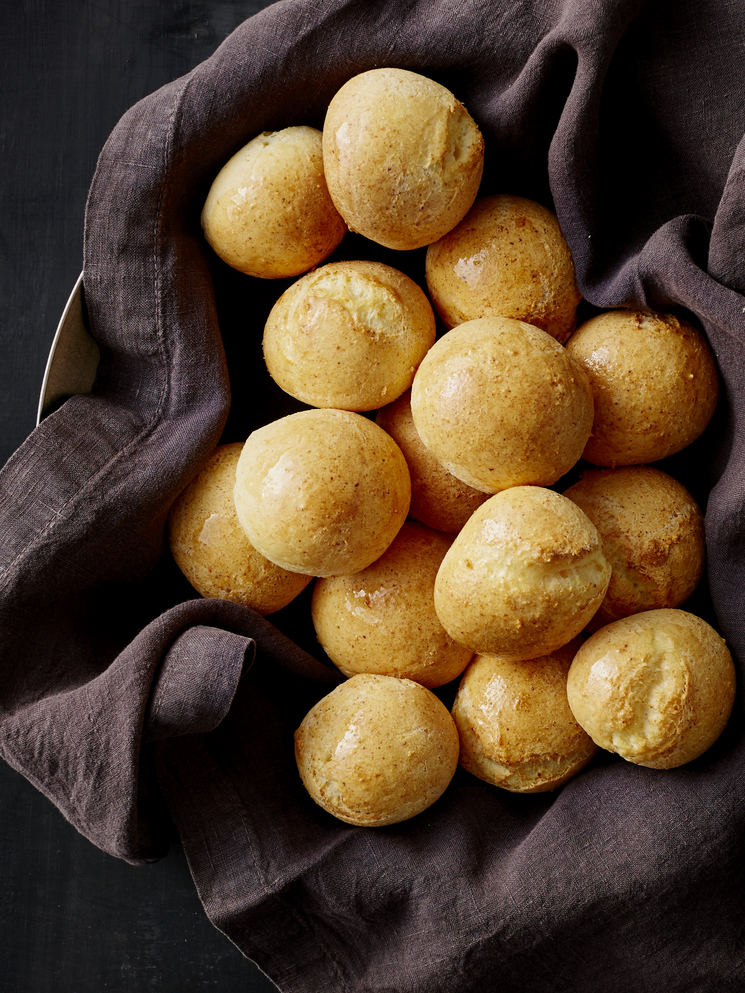

Pan de Bono

Pandebono is a type of South American roll or bagel prepared using two
different types of flour and cheese. They are typically eaten a few minutes
after coming out of the oven, though they can also be reheated, and are often
enjoyed at breakfast or lunch with coffee or hot chocolate. There are a number
of different stories as to the origin of the name, as well as where these
rolls were first created and served. Pandebono can be quite quick and easy to
make, and it is often available from South American bakeries or certain
specialty bakeries in the US.
While it is typically agreed upon that pandebono originated in Colombia, there
is a great deal of speculation and disagreement over its precise origin. One
story holds that an Italian baker who had come to Colombia invented these
rolls. It is said that he would sell the rolls by shouting “pane del buono,”
which means “good bread” in Italian, and which turned into “pandebono” through
repetition. Other stories hold that it was first created by the owner of a
small restaurant named Hacienda El Bono and the rolls were called pan del Bono
or “bread from El Bono,” which was eventually shortened to “pandebono.”
Ingredients:
-
2 ½ cups yuca or cassava starch - sometimes also called yuca flour or
tapioca starch/flour
-
4 cups grated mozzarella cheese can also use half mozzarella & half queso
fresco or quesillo
-
4 cups grated mozzarella cheese can also use half mozzarella & half queso
fresco or quesillo
- Pinch of salt
-
1 stick of butter 4 oz or 113 grams, room temperature, cut into 8 pieces
- 2 large eggs
- 2-4 tablespoons of water or milk, add more if the dough is dry
Steps:
-
Combine the yuca starch or flour, cheese, baking powder and salt in a food
processor, blend to mix well.
- Add the butter and eggs.
-
Mix until small dough balls begin to form, if it's too dry add 1-2
tablespoons of water or milk. Add more if needed.
-
Remove the dough from the food processor and roll into a ball, you can make
the dough ahead and store in the refrigerator for up to a day.
-
To make the dough by hand, combine all the ingredients in large bowl, using
melted (cooled down) butter, and mix until you have a smooth dough. It's
actually very easy to prepare by hand.
- Pre-heat the oven to 500 F.
-
Make small round shaped breads with the dough and place on a cookie sheet
with parchment paper.
-
Bake immediately or store in the fridge until ready to bake. I find that
they turn out best if you do let them chill in the fridge for about 30
minutes before baking.
-
Once the oven reaches 500F, turn on broiler, place the breads on the middle
rack and bake until the breads are golden, about 5-7 minutes. Another option
is to pre-heat the oven to 400F and bake at 400F for about 5 minutes and
then turn on the broiler.